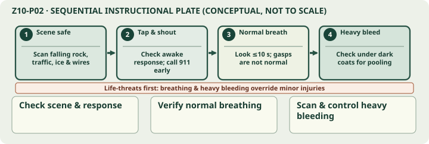

Z10-P02 · Wilderness medicine · New manuscript
Run a rapid primary survey for breathing and life-threatening bleeding
Identify immediately fatal conditions in seconds before examining minor scrapes or sprains.
When it applies · First sixty seconds with any injured, fallen, or suddenly collapsed companion.
Equipment · Disposable nitrile gloves if available, watch or phone clock, and clean dressing cloth.

Actions
- Check responsiveness by tapping and shouting clearly; if the person does not respond, call 911 immediately and send someone for an AED if near a facility.[T01, T02, M03]
- Look for normal rhythmic breathing for no more than ten seconds—occasional gasping (agonal breaths) is NOT normal breathing and requires immediate emergency CPR activation per dispatcher or training.[M03]
- Scan head to toe visually for pooling blood, spurting bleeding, or soaked heavy winter clothing that can conceal severe hemorrhage.[M01]
Failure recognition · Spending five minutes bandaging a scraped forearm while missing an unresponsive breathing problem or hidden thigh bleed under dark snow pants.[M01, M03]
Verify · Confirm responsiveness, normal breathing, and absence of uncontrolled heavy bleeding before moving to secondary checks.[T01, M01, M03]
Stop or change course · Unresponsiveness, abnormal breathing, or life-threatening bleeding triggers immediate 911 activation and continuous life-threat control ahead of everything else.[T02, M01, M03]
Evidence and editorial notes
- M01 · American College of Surgeons · STOP THE BLEED Training Course (current web edition)
- Section: Ensure Your Own Safety; Find Life-Threatening Bleeding; Compress · Conditions: Lay responder encountering severe external hemorrhage
Support: Ensure scene safety first, call 911, expose the wound to locate life-threatening bleeding, and apply firm continuous direct pressure with clean gauze or cloth.
Limitations: Does not replace formal hands-on Stop the Bleed training or EMS trauma care. · Conflicting evidence: None across ACS/ARC guidelines.
Editorial note: Separates life-threatening arterial/venous hemorrhage from minor scrapes. · Specialist reviewer: Wilderness medicine and trauma EMS
Primary source · checked 2026-11-24 - M03 · American Red Cross · CPR Steps and Emergency Response (current web edition)
- Section: Check, Call, Care; Unresponsive Person Without Normal Breathing · Conditions: Unresponsive person not breathing normally; lay responder with EMS activation
Support: Verify scene safety, check responsiveness and normal breathing, call 911 and retrieve an AED if available, and begin dispatcher-guided or trained CPR.
Limitations: Lay text reference cannot substitute for hands-on certified CPR/AED training. · Conflicting evidence: None; aligns with AHA/ARC bystander guidance.
Editorial note: Distinguishes lay activation and dispatcher-guided CPR from advanced life support. · Specialist reviewer: EMS and resuscitation specialist
Primary source · checked 2026-11-24 - T01 · American Red Cross · First Aid Steps (current web edition)
- Section: First Aid Steps > Check the scene; check the person · Conditions: Lay responder in United States; assess safety before contact
Support: Check scene safety, responsiveness, breathing and immediately life-threatening conditions.
Limitations: Lay guidance does not replace advanced clinical or rescue protocols. · Conflicting evidence: None; universal first-response opening gate.
Editorial note: Anchors scene-safety-first rule across Z01. · Specialist reviewer: EMS and wilderness medicine
Primary source · checked 2026-11-24 - T02 · American Red Cross · First Aid Steps (current web edition)
- Section: First Aid Steps > Call 9-1-1 · Conditions: Lay emergency response to unresponsiveness, abnormal breathing or severe bleeding
Support: Activate EMS and get needed equipment. Follow dispatcher directions and act within training.
Limitations: Remote locations may delay EMS arrival, requiring sustained stabilization after activation. · Conflicting evidence: None; aligns with NPS-E.
Editorial note: Mandates early emergency activation and dispatcher adherence. · Specialist reviewer: EMS and wilderness medicine
Primary source · checked 2026-11-24
Source lineage · American Red Cross and ACS Stop the Bleed; new manuscript · Classification · New manuscript.